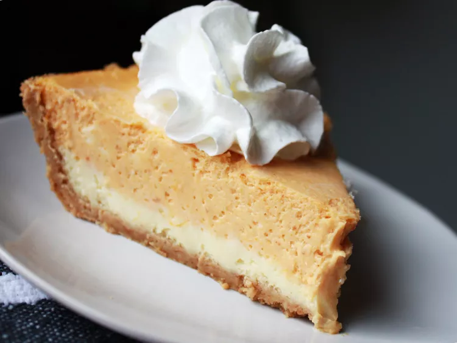

Home
Double Layer Pumpkin Cheesecake

A thick, creamy cheesecake base topped with a layer of spiced pumpkin cheesecake filling sits on a graham cracker crust in this easy layered holiday dessert.
Two flavors of cheesecake in every bite! Serve with a scoop of vanilla ice cream or a dollop of whipped cream.
Ingredients
Cheesecake Layer:
- 2 (8 ounce) packages cream cheese, softened
- ½ cup white sugar
- 4½ teaspoon vanilla extract
- 2 large eggs
- 1 (9 inch) prepared graham cracker crust
Pumpkin Layer:
- ½ cup pumpkin puree
- ½ teaspoon ground cinnamon
- 1 pinch ground cloves, or more to taste
- 1 pinch ground nutmeg, or more to taste
Steps
- Preheat the oven to 325 degrees F (165 degrees C).
- Make cheesecake layer: Beat cream cheese, sugar, and vanilla in a large bowl with an electric mixer until smooth.
Add eggs, one at a time, blending well after each addition. Spread 1 cup batter in the graham cracker crust.
- Make pumpkin layer: Add pumpkin puree, cinnamon, cloves, and nutmeg to the remaining batter; stir gently until well blended.
Carefully spread on top of plain cheesecake batter in the crust.
- Remove from the oven, set on a wire rack, and cool to room temperature, 1 to 2 hours.
- Refrigerate for at least 3 hours before serving, preferably overnight.
Home